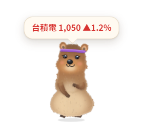
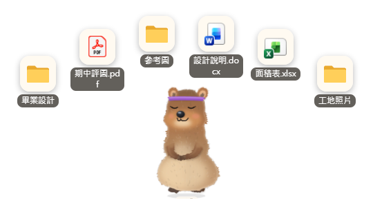
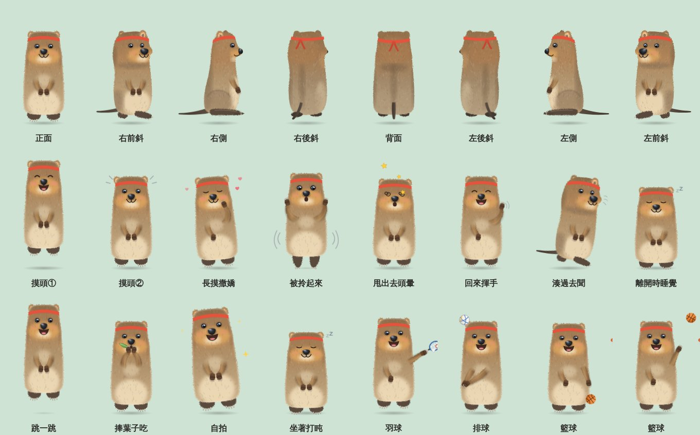

把待辦、提醒、股票和常用的資料夾交給牠們，每隻各管各的。有事時牠會跳出來講，沒事時就在螢幕下面散步、打球、打瞌睡。

不用選類型。打完按 Enter，牠會自己判斷是提醒、股票、捷徑還是待辦，下面先顯示判斷結果讓你確認。
時間到了，負責的那隻跳出來響鈴，可以按「知道了」或「5 分後」。電腦睡著或程式沒開而錯過的，回來時會告訴你錯過了哪幾件。
可以養好幾隻，每件事都有負責的那隻。把事情拖到另一隻的頭像上，就換牠管。

每隻可以管 12 個捷徑。滑鼠移到牠身上，頭頂浮出一排資料夾和檔案，滑過去點一下就打開。
台股和美股都可以。開盤時間每分鐘講一次現價，漲是紅色、跌是綠色，同一隻盯好幾檔時一檔一檔輪流講。漲跌跨過你設的門檻（1%、2% 或 3%）時，牠會歡呼或垂頭。
右鍵問「今天股市怎麼了？」，牠會用自己的個性解釋今天的均線、RSI、KD 這些指標發生了什麼。只講已經發生的事，不預測、不建議買賣。
毛色、體型、年齡和個性都是隨機的，範圍照真的短尾矮袋鼠資料。點一下摸頭，點兩下打開面板，拖起來會被拎著走，甩太快會頭暈。閒的時候自己散步、打羽球、打籃球、吃葉子；處得好的兩隻會變好朋友，甚至生小袋鼠。

%APPDATA%\quokka-pet。不會上傳。%APPDATA%\quokka-pet。